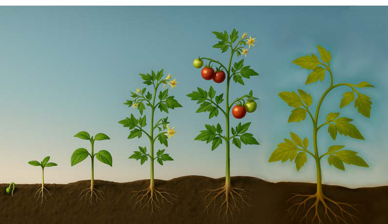

seeds or fruits. Development in animals includes changes in body structure and functions. Examples of development in animals include a caterpillar becoming a butterfly and a baby growing into an adult. Development in plants and animals involves physical and behavioral changes.
Growth and development in plants
Plant growth and development refers to the series of changes a plant undergoes throughout its life cycle. Plant growth and development involves different stages. Each stage of development plays a vital role and has distinct features. These stages include seed germination, seedling, vegetative stage, reproduction stage, and senescence. Observe Figure 1.

(a) Seed germination
Seed germination is the process by which a seed develops into a new plant. A seed germinates when it has matured and has received the required conditions, which are sunlight, water, air, nutrient and optimum temperature. During germination, the radicle emerges and anchors the seedling into the soil. The radicle also absorbs water and nutrients needed for plant growth. The radicle is the embryonic root of the plant. Another part called the plumule also emerge, it is the embryonic shoot of the plant. It begins to grow upwards, eventually forming the stem and leaves of the plant. During this stage, food stored in the seed is used as a source of energy for germination.